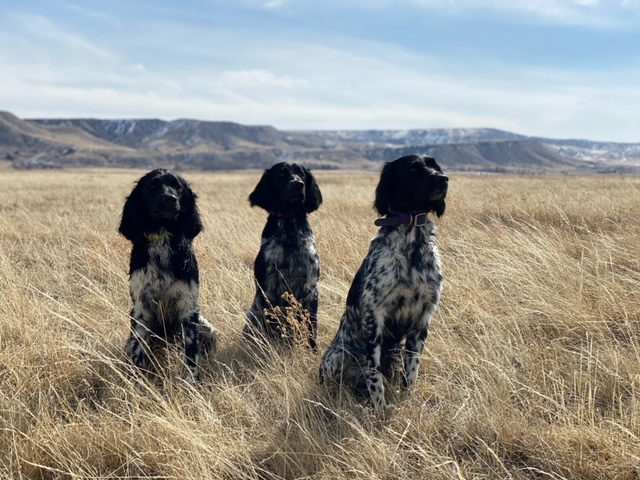
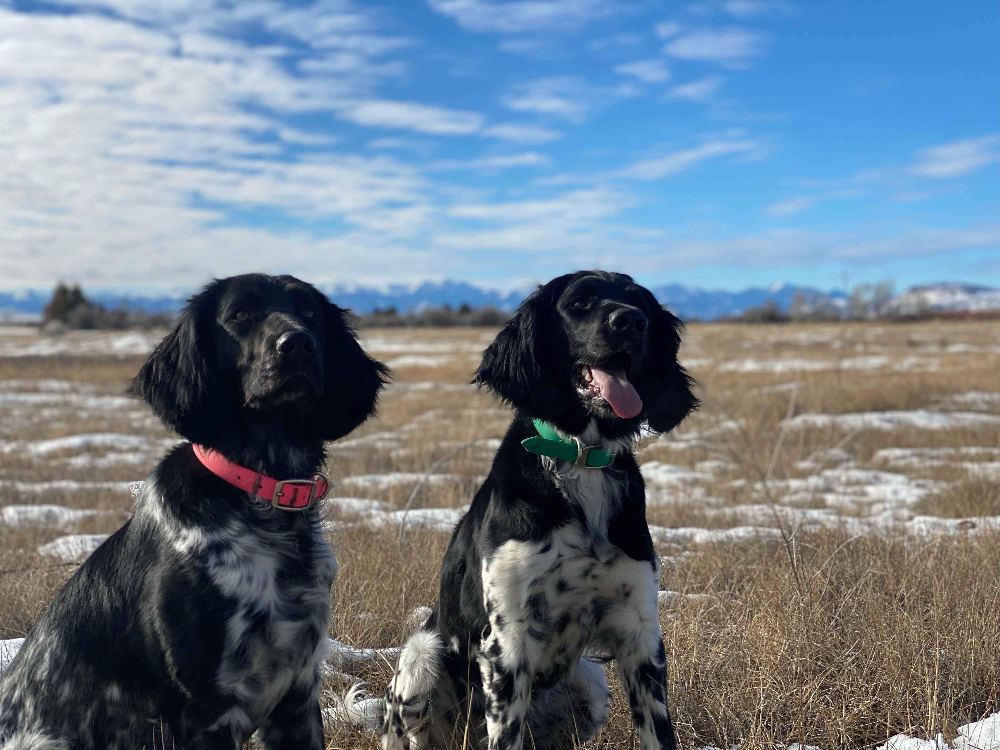

|  |
We provide pure bred, well behaved, lovable Large Münsterländers. With at least one litter a year be sure to keep up woth our page to be aware of when we have a litter! Pictured to the right and left are our three dogs, Blue Spruces' Atlanta "Layla" (far right purple collar), Herz Und Seels Quest (green collar), and Idlewild Prairies' Althea (pink collar). |
 |